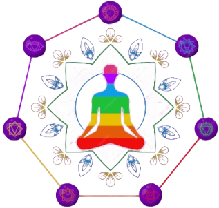

Reiki
O Reiki foi desenvolvido por Mikao Usui em 1922 enquanto praticava Isyu Guo, um treino budista de 21 dias organizado no Monte Kurama. Reiki é uma prática espiritual que se baseia na crença da existência da energia vital universal "Ki", manipulável pela imposição de mãos. O método funciona como uma limpeza energética para energizar os chakras - centros das energias vitais. Trata-se de uma terapia complementar, portanto não substitui outros tipos de tratamento para doenças psicológicas ou físicas. Reconhecido pela Organização Mundial de Saúde (OMS).
Quais os benefícios do Reiki?
Aumenta a sensação de paz e tranquilidade...
Reduz o estresse e a alívia a ansiedade...
Alivia dores e desconfortos físicos...
Melhora a qualidade do sono...
Benefícios do Reiki aos pets
Relaxamento profundo nos animais, aliviando o estresse, a ansiedade e a tensão
muscular.
Redução da dor física, incluindo desconforto causados por doenças, lesões ou processos de
envelhecimento.
Fortalecimento do sistema sistema imunológico dos animais, ajudando a prevenir o surgimento
de doenças e a acelerar processos de cura.
Ao receber Reiki, o animal cria uma conexão mais profunda com seu dono, fortalecendo o
vínculo entre eles e a comunicação energética.
Suporte em processos de transição, como doenças terminais, perda de um companheiro ou
mudança de ambiente, proporcionando conforto e apoio emocional.
Barras de Access
As Barras de Access são um processo terapêutico que envolve toques suaves em 32pontos energéticos
localizados na cabeça. Esses pontos armazenam pensamentos, crenças, emoções e padrões limitantes que foram registrados ao longo da vida.
Ao tocar suavemente esses pontos, é possível liberar essas
energias bloqueadas, permitindo uma maior clareza mental, bem-estar emocional e uma sensação de
expansão e possibilidades.
Princípais benefícios das Barras de Access
Redução do estresse e ansiedade, ao liberar bloqueios
energéticos e padrões negativos, as Barras de Access podem reduzir os níveis de estresse e
ansiedade.
Melhora do sono, as Barras de Access podem ajudar a melhorar a qualidade do sono, diminuindo a
atividade mental e promovendo um estado de relaxamento profundo.
Aumento da criatividade, ao liberar bloqueios e limitações, as Barras de Access podem estimular
a conexão com a criatividade e a inspiração.
Alívio de dores físicas,pessoas relatam alívio de dores e desconfortos físicos após uma sessão
de Barras de Access.

Apometria
Apometria é uma técnica terapêutica que busca promover a cura e o equilíbrio das energias de uma pessoa, através do desdobramento esperitual. É fundamentada na idéia que todo indivíduo possui vários corpos (físico, emocional, mental e espiritual) e que é possível trabalhar com esses corpos de forma separada, permitindo o tratamento de desequilíbrios energéticos. A técnica é realizada por meio de um mediador, conhecido como apômetra, que auxilia o desdobramento do paciente para permitir a limpeza e harmonização de suas energias. Durante esse processo, é possível acessar memórias e traumas do passado, resgatar partes do ser que foram perdidas ou reprimir experiências negativas.
Principais benefícios da Apometria
Autoconhecimento, a apometria oferece a oportunidade de se conhecer mais profundamente, permitindo identificar e trabalhar traumas, crenças limitantes e padrões negativos. Cura emocional, a técnica atua no campo energético, auxiliando na liberação de emoções negativas e traumas do passado, provendo a cura emocional e o equilíbrio mental. Desenvolvimento espiritual, a apometria permite um contato mais profundo com o mundo espiritual, possibilitando a conexão com guias esperituais e trabalhando no desenvolvimento esperitual do indivíduo. Através da apometria é possível realizar uma limpeza energética completa, removendo energias densas, obsessores esperituais e quaisquer bloqueios energéticos presentes no corpo sutil. Autoempoderamento, a apometria auxilia no processo de Autoempoderamento, proporcionando ao indivíduo o fortalecimento pessoal e a capacidade de transformar sua própria realidade, através do autoconhecimento e da conexão com sua verdade interior.
Sobre Nossas Terapeutas;
Nossas terapeutas são profissionais altamente qualificadas e dedicadas, cada uma com sua própria especialidade e abordagem única para a terapia. Aqui estão algumas informações sobre cada uma delas:
Jaqueline Mattos:
Sou espiritualista, sempre gostei do lado esotérico. Um dia recebi reiki de uma amiga, me senti tão bem , com minhas energias revigoradas. Me interessei, fiz o primeiro curso de reiki nível 1 no ano de 2000. Depois vieram os outros níveis. Me tornei mestra em Reiki . Atendia pessoas da família e amigos. Hoje faço um trabalho voluntário num centro espírita.Mas meu trabalho voluntário não começou agora no centro.Faz mais de trinta anos que trabalho no centro,Com o reiki começou um pouco depois. Fiz também curso de Barras de Access. Amei essa ferramenta. E também me interessei na Radiestesia Terapêutica. Que fiz curso também. Agora abri meu espaço holístico, para atender pessoas que querem se melhorar, física, mental e Espiritualmente. Pretendo também fazer atendimentos voluntariamente. Pra ajudar o próximo e na minha caminhada espiritual.
Rosana Cardoso:
Olá, sou uma terapeuta de Apometria com formação adequada e 5 anos de experiência. Meu objetivo é proporcionar um ambiente seguro e acolhedor para ajudar você a encontrar equilíbrio e bem-estar. Através da Apometria, eu trabalho com a energia do seu corpo para promover a cura, o relaxamento e seu bem-estar. Estou aqui para ouvir suas necessidades e personalizar cada sessão de acordo com elas. Lembre-se, a Apometria é uma terapia complementar que pode trabalhar em conjunto com seus cuidados médicos existentes. Estou ansiosa para ajudá-lo em sua jornada de bem-estar.